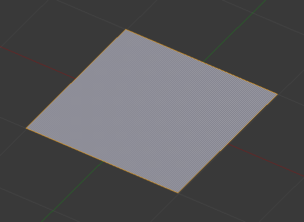
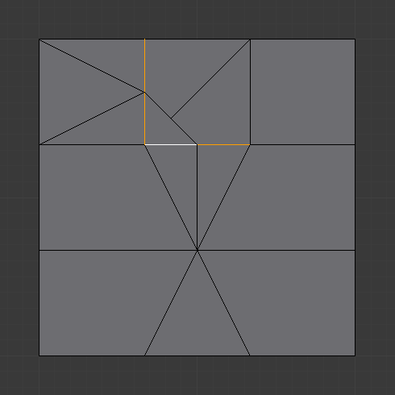

Підподіл -- Subdivide¶
Орієнтир -- Reference
| Режим: | Режим Правки -- Edit Mode |
|---|---|
| Панель: | «Полиця Інструментів > Інструменти > Інструменти Сітей > Додання: Підподілення» -- |
| Меню: | «Сіть > Ребра > Підподіл» -- , «Спеціальне > Підподіл/Підподіл Згладжено» -- |
Підподілювання поділяє виділені ребра та грані, розрізаючи їх на половині або більше, додаючи нові вершини та підподіляючи відповідно залучені навколишні грані. Це додає роздільність сіті, ділячи грані або ребра на менші елементи.
Цей процес слідує кільком правилам, залежно від таких устав:
- Коли виділено тільки одне ребро грані (режим Три-бічників), то трикутники підподіляються на два трикутники, а два чотирибічники -- на три трикутники.
- Коли два ребра грані виділено:
- Якщо грань є трикутною, то створюється нове ребро між двома новими вершинами, підподіляючи трикутника на трикутник і чотирибічник.
- Якщо грань є чотирибічною і ці ребра є сусідніми, то ми маємо три можливі поведінки, залежно від устави Corner Cut Type (меню вибору біля кнопки Subdivide на панелі Mesh Tools). Дивіться детальніше нижче.
- Якщо грань є чотирибічною, а ребра є протилежними, то цей чотирибічник просто підподілиться на два чотирибічники ребро, що пов'язує дві нові вершини.
- Коли виділено три ребра грані:
- Якщо грань є трибічником, то це означає, що виділиться уся грань, а потім підподілиться на чотири менші трикутники.
- Якщо грань є чотирибічником, то спершу два протилежні ребра підподіляться, як описано вище. Далі, «серединне» ребро підподілиться, задіюючи його новий «під-чотирибічник», як описано вище для тільки одного ребра.
- Коли чотири ребра грані (чотирибічника) виділено, то ця грань підподілиться на чотири менші чотирибічники.
Опції¶
Ці опції доступні на панелі Інструмента після запуску цього засобу;
- Кількість Розрізів -- Number of Cuts
- Вказує кількість розрізів на ребро. Стандартно це 1, розрізає ребра навпіл. Значення 2 дає розрізання на третини й так далі.
- Згладженість -- Smoothness
Зміщує підподіли для підтримання приблизної кривини. Ефект подібний до того, як модифікатор Subdivision Surface може деформувати сіть.

Сіть перед підподілюванням.

Підподілення без згладжування.

Підподілення зі згладженістю в 1.
- Режим Чотири/Три -- Quad/Tri Mode
- Змушує підподілення створювати трибічники або чотирибічники замість N-бічників (дивіться приклади нижче). Цей режим не дозволяє використовувати Straight Cut* на кутках чотирибічника.
- Тип Кутка Розрізу -- Corner Cut Type
Це меню вибору керує способом, яким підподіляються чотирибічники з виділеними лише двома сусідніми ребрами.
- Віяло -- Fan
- Чотирибічник підподіляється на віяло чотирьох трикутників, спільна вершина буде на протилежній стороні від виділених ребер.
- Внутрішні вершини -- Inner vertices
- Виділені ребра підподіляються, потім створюється ребро між двома новими вершинами, створюючи маленький трикутник. Це ребро також підподіляється, і таким чином створена «внутрішня вершина» пов'язується з іншим ребром на протилежній стороні від оригінальних виділених ребер. Все це дає те, що чотирибічник підподіляється на один трибічник та два чотирибічники.
- Шлях -- Path
- Спершу створюється ребро між двома протилежними кінцями виділених ребер, розділяючи чотирибічник на два трибічники. Далі, так само відбувається для залученого трибічника, як описаного вище.
- Прямий Розріз -- Straight Cut
- The selected edges are subdivided, then an edge is created between the two new vertices, creating a small triangle and n-gon.

Тип розрізу Inner vertices.

Тип розрізу Path.
- Фрактал -- Fractal
Зміщує вершини у випадкових напрямках після підподілу сіті.
Площина перед підподіленням.

Звичайне підподілення.

Ця ж сіть з доданим Fractal.
- Уздовж Нормалі -- Along Normal
Спричиняє те, що вершини рухаються уздовж їх нормалей, замість того, що рухатися у випадкових напрямках при фракталі.

Along Normal задано як 1.
- Базис Випадковості -- Random Seed
Змінює базис випадковості функції шуму для Fractal, продукуючи різні результати для кожного значення базису.

Ця ж сіть з іншим значенням базису.
Приклади¶
Нижче наведено кілька прикладів, що ілюструють різні можливості інструментів Subdivide та Subdivide Multi. Зверніть увагу на виділення після підподілення.
Зразок сіті.
Одне ребро¶

Одне ребро. |

Режим Quad/Tri Mode. |

Два протилежні ребра чотирибічника¶

|
Два сусідні ребра чотирибічника¶
|
Тип розрізу Inner Vert. |

Режим Quad/Tri Mode. |
|
Тип розрізу Path. |

Режим Quad/Tri Mode. |


{kind=link}
{kind=link}
{kind=link}
{kind=link}
{kind=link}
{kind=link}
{kind=link}
{kind=link}
{kind=link}
Чотири ребра/Чотирибічник¶

|
{kind=link}
Багаторозріз¶

Трибічник з двома розрізами. |
{kind=link}
Зне-Підподіл -- Un-Subdivide¶
Орієнтир -- Reference
| Режим: | Режим Правки -- Edit Mode |
|---|---|
| Меню: | «Сіть > Ребра > Зне-Підподіл» -- |
Знепідподіл функціонує як зворот підподілу, намагаючись вилучити ребра, що були результатом операції підподілення. Якщо додаткове редагування було зроблене після операції підподілу, то можуть трапитися неочікувані результати.
- Повтори -- Iterations
- Скільки підподілів буде вилучено.